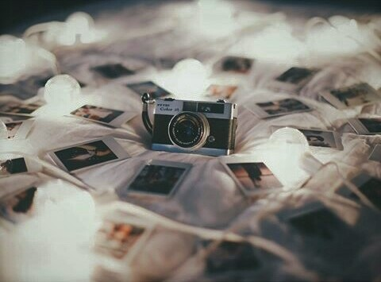
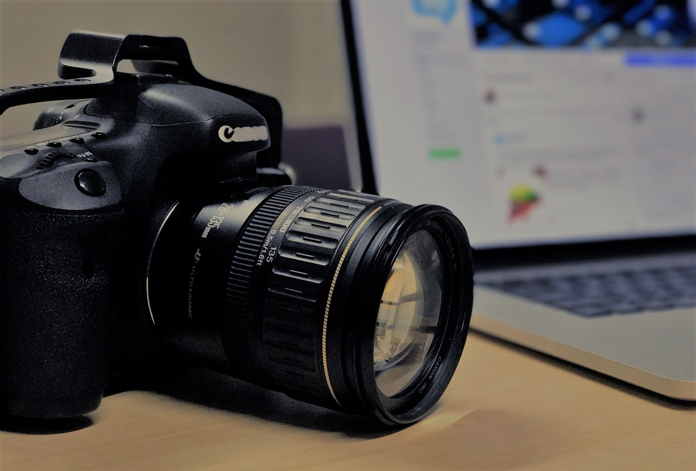
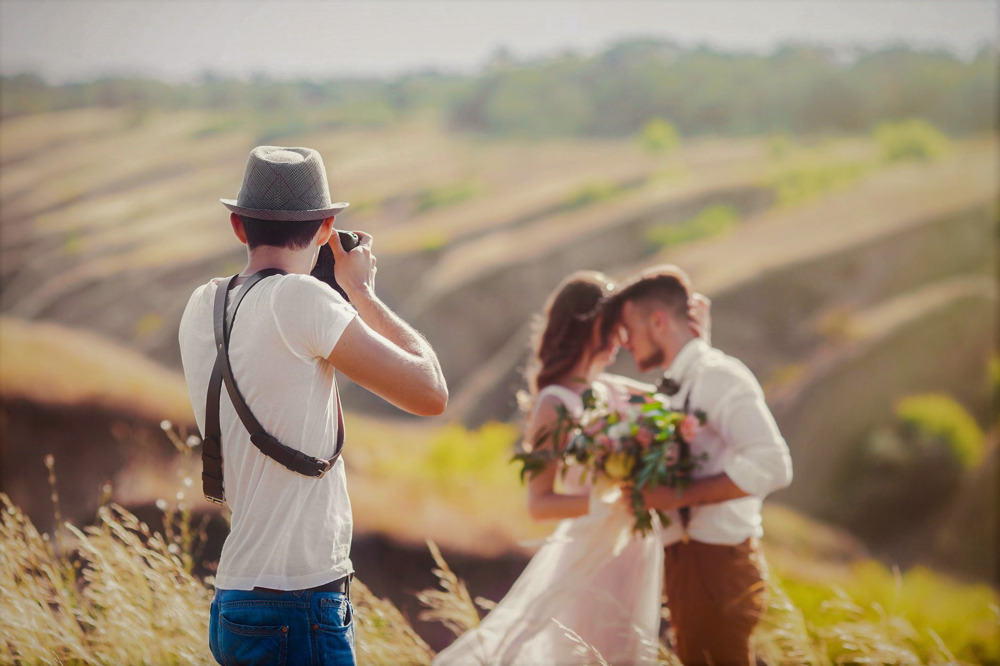
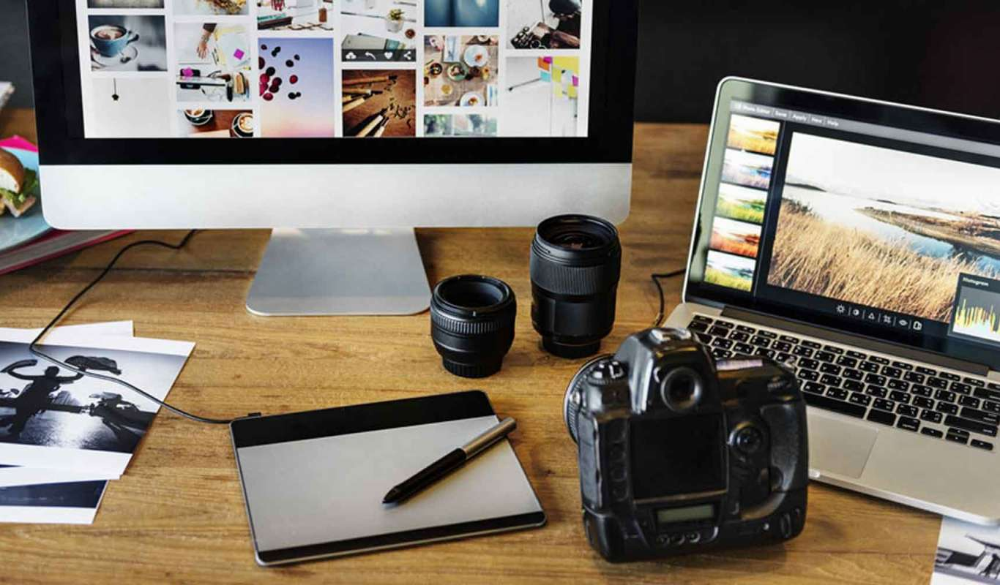

 Cursurile de initiere in fotografie se desfasoara pe durata a 6 luni , cele teoretice avand loc o data pe saptamana, de obicei in zilele de luni. luni, 18:00-21:00
 Cursul aprofundat cuprinde cursul de initiere in fotografie si o continuare a acestuia. Se desfasoara pe durata a 12 luni. miercuri, 18:00-21:00
 Cursul de fotografie de nunta, se adreseaza celor care vor sa isi construiasca o carierea pe fotografia de nunta, sau mai bine zis pe fotojurnalismul nuntii. Scoala trateaza la un nivel aprofundat toate elementele de tehnica fotografica, compozitie, simbolistica. Acest curs se desfasoara pe perioada a 10 luni. joi, 18:00-21:00
Practica: Estomparea zgomotului de imagine doar in zonele in care este prezent, pentru a nu diminua detaliile din zone in care nu este necesara interventia, asa cum se intampla folosind softuri precum Lightroom, Aperture, Capture One s.a.m.d.. Extinderea latitudinii de expunere pentru obtinerea unei imagini apropiata de cea din realitate, cu detalii credibile atat in zona de umbra cat si in cea de lumina, ceea ce nici o camera digitala nu va putea obtine, indiferent de pret sau nume. Modificarea contrastului, separat in zonele de lumina, de tonuri medii sau de umbra, fara a obtine alte efecte scundare precum modificarea culorilor initiale si/sau pierderea detaliului, asa cum se intampla inevitabil in orice soft cand se folosesc fie metoda “S Curve” fie slider-ul denumit generic “Contrast”. Cresterea claritatii imaginii, intr-un mod in care nu vor exista alte limitari decat o eventuala depasire a nivelului de detaliu pe care ochiul este obisnuit sa il perceapa. Curatarea culorilor intru-n mod extrem de simplu si, foarte important, datorita tehnicii, singurul element modificat este culoarea, detaliul fiind neschimbat. Pentru acest scop nu vor putea fi folosite niciodata solutii precum Hue/Saturation sau HSL/HSB. Fotografia Alb/Negru. Practica, duminica~14:00
 Cursul de procesare si editare (Photoshop, Lightroom) se desfasoara pe durata a 4 luni. Vineri, 17:00-20:00